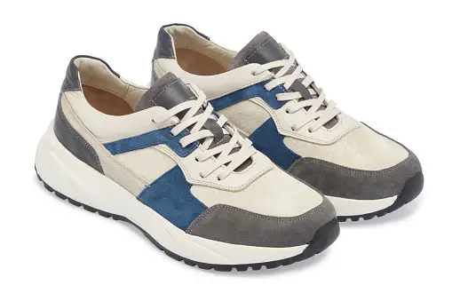

StrideStyle Footwear is a leading manufacturer specializing in footwear,
offering wide range trendy and high-quality shoes for men, women and children.
The company operate both online and through brick-and-mortar stores across
multiple locations collaborating with multiple retailers and providing exceptional customer services.
My objective is to assess the performance of retailers they have collaborated with so far in order to optimize resource allocation.
This analysis was performed using Microsoft Excel and Power BI Service.

The goals of this analysis is to utilize the dataset to guide Techtronix Innovations in overcoming its current obstacles through the creation of an automated Power BI
report. This report should focus on:
1. Sales Performance Analysis: Uncover sales trends across various product categories, sectors, regions, and timeframes. Highlight the best and
worst performers.
2. Customer Insights: Dive into customer segmentation to reveal purchase patterns, preferences by sector, and geographic distribution. Identify
the sectors contributing most significantly to sales and profitability.
3. Inventory Optimization: Evaluate inventory management against sales figures to pinpoint production planning mismatches. Propose methods
to better align production with market demands.
4. Profitability Analysis: Analyze the profitability across different product categories, taking into account sales revenue and production costs.
Point out products with high margins and suggest cost reduction strategies.
5. Market Expansion Opportunities: Analyze sales and customer data to discover new markets for expansion, emphasizing regions and sectors
with untapped potential.
The aim of this Project is to look at how User behave on the shopping app and examine their feedback properly to determine the next step of action
so as to be able to create a better Shopping app and generate more income as well as more customers for the organization.